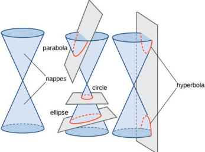

Conic Sections
A conic section (or simply conic) is a curve obtained as the intersection of the surface of a cone with a plane. The three types of conic sections are the hyperbola, the parabola, and the ellipse. The circle is type of ellipse, and is sometimes considered to be a fourth type of conic section.
Conic sections can be generated by intersecting a plane with a cone. A cone has two identically shaped parts called nappes. One nappe is what most people mean by “cone,” and has the shape of a party hat.
Conic sections are generated by the intersection of a plane with a cone. If the plane is parallel to the axis of revolution (the y-axis), then the conic section is a hyperbola. If the plane is parallel to the generating line, the conic section is a parabola. If the plane is perpendicular to the axis of revolution, the conic section is a circle. If the plane intersects one nappe at an angle to the axis (other than 90°), then the conic section is an ellipse.
